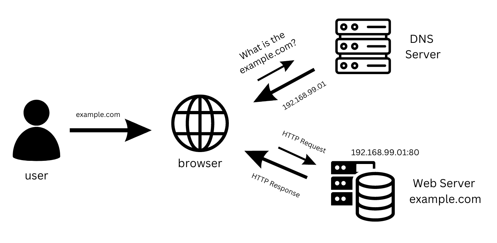

HyperText Transfer Protocol (HTTP)
Today, the majority of the applications we use constantly interact with the internet, both web and mobile applications. Most internet communications are made with web requests through the HTTP protocol. HTTP is an application-level protocol used to access the World Wide Web resources. The term hypertext stands for text containing links to other resources and text that the readers can easily interpret.
HTTP ommunication consists of a client and a server, where the client request the server for a source. the server process the request and retruns the requested resource. the default port for HTTP communication is port 80, though this can be changed to any other port, depending on the server configuration. the same request are utilized when we use the internet to visit different websites. we enter a Fully Qualified Domain Name (FQDN) as a Uniform Resource Locator (URL) to reach the desired website, like
URL
Resources over HTTP are accessed via a URL, which offers many more specifications than simply specifying a website we want to visit.

Here is what each component stands for:
| Component |
Example |
Description |
| Scheme |
http:// https:// |
This is used to identify the protocol being accessed by the client, and ends with a colon and a double slash (://) |
| User Info |
admin:password@ |
This is an optional component that contains the credentials (separated by a colon :) used to authenticate to the host, and is separated from the host with an at sign (@) |
| Host |
inlanefreight.com |
The host signifies the resource location. This can be a hostname or an IP address |
| Port |
:80 |
The Port is separated from the Host by a colon (:). If no port is specified, http schemes default to port 80 and https default to port 443 |
| Path |
/dashboard.php |
This points to the resource being accessed, which can be a file or a folder. If there is no path specified, the server returns the default index (e.g. index.html). |
| Query String |
?login=true |
The query string starts with a question mark (?), and consists of a parameter (e.g. login) and a value (e.g. true). Multiple parameters can be separated by an ampersand (&). |
| Fragments |
#status |
Fragments are processed by the browsers on the client-side to locate sections within the primary resource (e.g. a header or section on the page). |
Not all components are required to access a resource. The main mandatory fields are the scheme and the host, without which the request would have no resource to request.
HTTP Flow

The first time a user
CURL
In this module, we will be sending web requests through two of the most important tools for any web penetration tester, a web browser, like Chrome or Firefox, and the cURL commandline tool.
cURL (Client URL) is a command-line tool and library that primarily supports HTTP along with many other protocols. This make it a good candidate for scripts as well as automation, making it essential for sending various web requests from the command line, which is necessary for many types of web penetration tests.
We can send a basic HTTP request to any URL by using it as an argument for cURL, as follows:
curl www.example.com
curl example.com -v
We see that cURL does not render the HTML/JavaScript/CSS code, unlike a web browser, but prints it in its raw format. However, as penetration testers, we are mainly interested in the request and response context, which usually becomes much faster and more convenient than a web browser.
We may also use cURL to download a page or a file and output the content into a file using the -O flag. If we want to specify the output file name, we can use the -o flag and specify the name. Otherwise, we can use -O and cURL will use the remote file name, as follows:
curl -O example.com
As we can see, the output was not printed this time but rather saved into index.html. We noticed that cURL still printed some status while processing the request. We can silent the status with the -s flag, as follows:
curl -s -O example.com
This time, cURL did not print anything, as the output was saved into the index.html file. Finally, we may use the -h flag to see what other options we may use with cURL:
As the above message mentions, we may use --help all to print a more detailed help menu, or --help category (e.g. -h http) to print the detailed help of a specific flag. If we ever need to read more detailed documentation, we can use man curl to view the full cURL manual page.
In the upcoming sections, we will cover most of the above flags and see where we should use each of them.